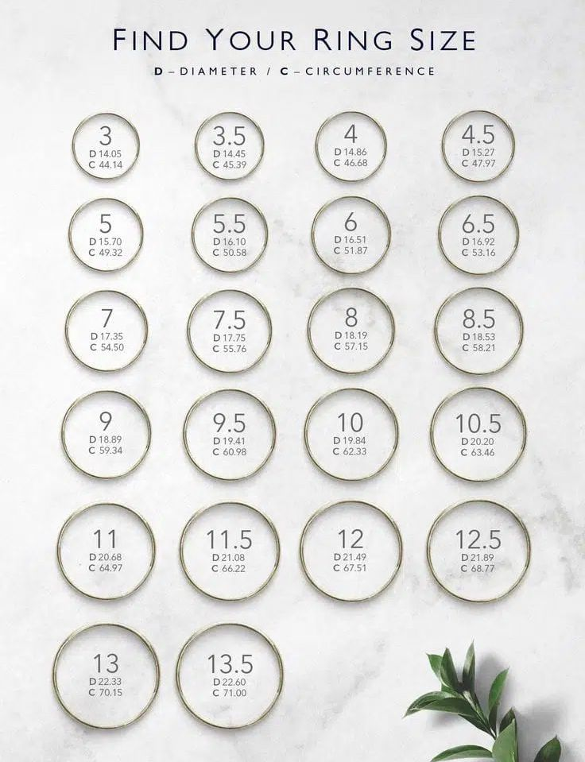

Pasos
- Toma un anillo que se ajuste al dedo de la mano donde se vaya a usar el anillo. Un buen ajuste se da cuando sientes que entra y sale sin incomodidad, pero no queda suelto cuando mueves la mano.
- Cuando encuentres un anillo indicado, busca una hoja blanca, luego toma un lápiz y dibuja el contorno interno del anillo. Te quedará la silueta interna del anillo dibujada en la hoja, que es una forma similar a un círculo.
- Después usa una regla para medir el diámetro exacto en milímetros de esta forma circular que dibujaste en el papel.